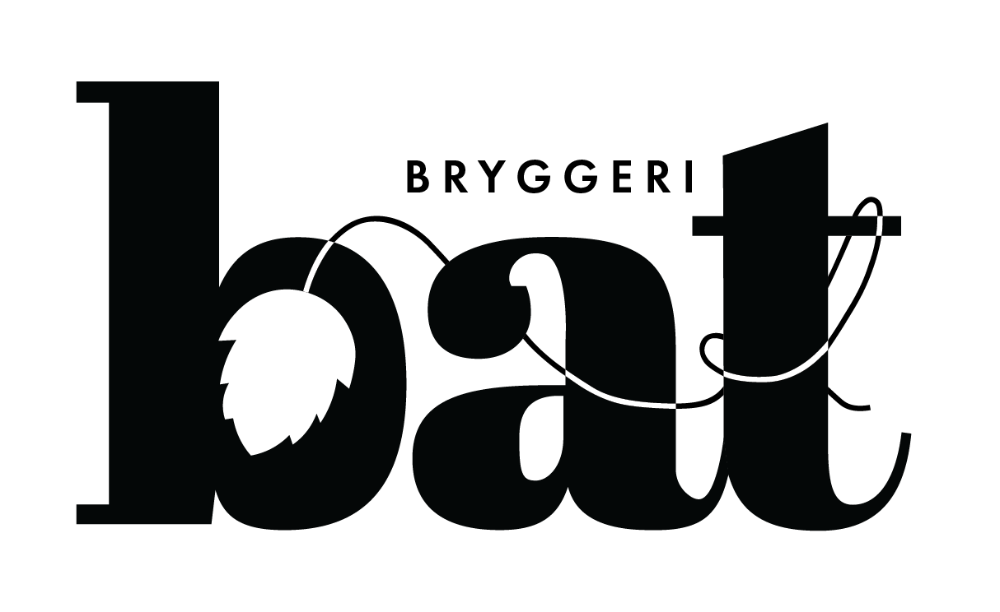

Logotype & Lables // BAT Brewery
My parents brew their own beer and I took it upon myself to give them a logo and some
labels. I wanted to keep the design simple and make it easy to multiply whenever they try
a new kind of beer. I used hops as the main icon both in the logo and the label.
The name is my parents combined initials.
